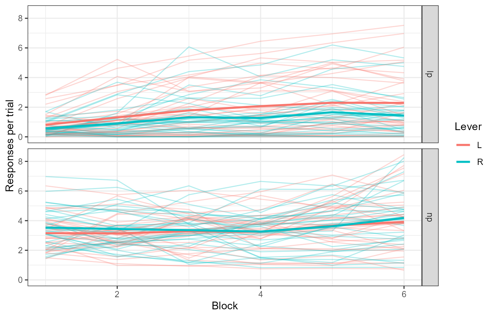
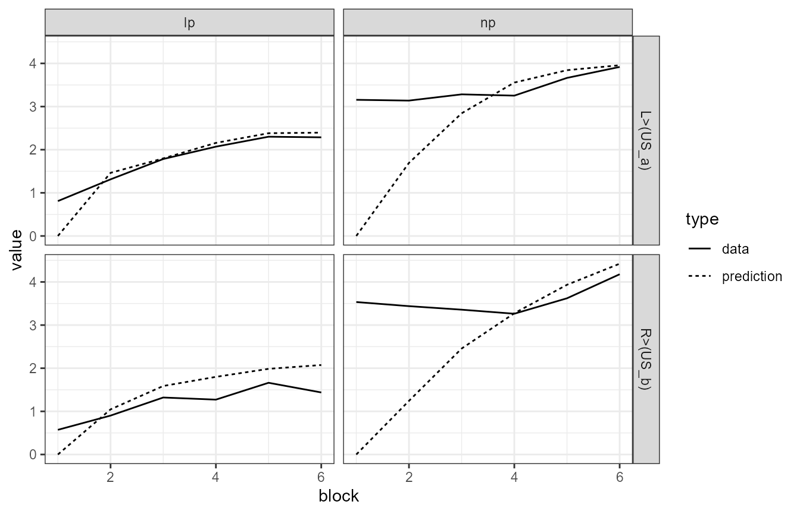

library(heidi)
library(ggplot2)
library(magrittr)
library(dplyr)
library(tidyr)
theme_set(theme_bw())
data(pati)
set.seed(2022)Fitting the model to empirical data
We now fit the model to some empirical data (Patitucci et al., 2016, Experiment 1). This will involve writing a function that produces model responses organized like the empirical data, and using that function for MLE. We begin with a short overview of the data, then move to the model function, and finally fit the model.
The data
The data, pati, contains the responses (lever presses or
lp, and nose pokes or np) for 32 subjects (rats) across 6 blocks of
training (2 sessions per block). The animals were trained to associate
each of two levers to one of two unconditioned stimuli (pellets or
sucrose). Let’s take a look at it.
glimpse(pati)
#> Rows: 768
#> Columns: 6
#> $ subject <fct> 1, 1, 1, 1, 1, 1, 1, 1, 1, 1, 1, 1, 1, 1, 1, 1, 1, 1, 1, 1, 1~
#> $ block <dbl> 1, 2, 3, 4, 5, 6, 1, 2, 3, 4, 5, 6, 1, 2, 3, 4, 5, 6, 1, 2, 3~
#> $ lever <fct> L, L, L, L, L, L, R, R, R, R, R, R, L, L, L, L, L, L, R, R, R~
#> $ us <chr> "P", "P", "P", "P", "P", "P", "S", "S", "S", "S", "S", "S", "~
#> $ response <fct> lp, lp, lp, lp, lp, lp, lp, lp, lp, lp, lp, lp, np, np, np, n~
#> $ rpert <dbl> 0.9000, 1.5500, 3.3500, 4.1500, 4.6500, 4.3250, 0.4000, 0.162~
pati %>% ggplot(aes(x = block, y = rpert, colour = us)) +
geom_line(aes(group = interaction(us, subject)), alpha = .3) +
stat_summary(geom = 'line', fun = 'mean', size = 1) +
labs(x = "Block", y = "Responses per trial", colour = "US") +
facet_grid(~response)
The thicker lines are group averages; the rest are individual subjects. We ignore the specific mapping between levers and USs here, because that was counterbalanced across subjects. However, the counterbalancing will end up being relevant (see ahead).
Writing the model function
The biggest hurdle in fitting the model to empirical data is to write a function that, given a vector of parameters and a model arguments, generates responses that are organized as the empirical data. Let’s begin by summarizing the group data first, so we know what to aim for.
pati_summ <- pati %>%
group_by(block, us, response) %>%
summarise(rpert = mean(rpert), .groups = "drop")
head(pati_summ)
#> # A tibble: 6 x 4
#> block us response rpert
#> <dbl> <chr> <fct> <dbl>
#> 1 1 P lp 0.820
#> 2 1 P np 3.41
#> 3 1 S lp 0.561
#> 4 1 S np 3.28
#> 5 2 P lp 1.57
#> 6 2 P np 3.51We now prepare the arguments for the model function (as you would
pass to run_heidi). To achieve this, we will use
make_heidi_args, a function that in turn necessitates three
other bits: 1) a design data.frame, 2) a table with parameters, and 3) a
list with simulation options. Note that these arguments are fixed during
the optimization process, which means that the training routine for each
simulation run is the same every time.
This is no minor issue, because the model is sensitive to order effects. Hence, it is important that the arguments we prepare here reflect the overall behavior of the model. Here, we simply address this issue by running several iterations of the model (with different training routines) and average all models before evaluating the likelihood of the parameters.
The experiment presented in Patittuci et al. (2016) was fairly simple, and it can be reduced to two levers each followed by a different appetitive outcome. Here, we will assume that the two outcomes are independent from each other. We will also take some liberties with the number of trials we specify in order to reduce computing time.
#The design data.frame
des_df <- data.frame(group = c("CB1", "CB2"),
training = c("12L>(Pellet)/12R>(Sucrose)", "12L>(Sucrose)/12R>(Pellet)"),
rand_train = T)
#The parameters
pars <- get_params(des_df) #the actual parameter values don't matter, as our function will re-write them inside the optimizer call
#The options
opts <- get_heidi_opts(iterations = 10)
#The arguments
my_mod_args <- make_heidi_args(design = parse_design(des_df), pars = pars, opts = opts)Note we specified two counterbalancings as groups. It is very
important that we reproduce the counterbalancings in the data we are
trying to fit as close as possible. Otherwise, the optimization process
will latch onto experimentally-irrelevant variables. For example, it can
be seen in pati that there was more lever pressing whenever
a lever was paired with pellets. If we didn’t counterbalance the
identities of the levers and USs, the model might think that one of the
levers is less salient than the other.
We can now begin to write the model function. First, it would be a
good idea to see what run_heidi returns if run with the
arguments above.
mod_res <- run_heidi(args = my_mod_args)
str(mod_res)
#> List of 4
#> $ vs : tibble [1,152 x 8] (S3: tbl_df/tbl/data.frame)
#> ..$ group : Factor w/ 2 levels "CB1","CB2": 1 1 1 1 1 1 1 1 1 1 ...
#> ..$ trial : int [1:1152] 1 1 1 1 1 1 1 1 1 1 ...
#> ..$ trial_type: Factor w/ 4 levels "L>(Pellet)","L>(Sucrose)",..: 1 1 1 1 1 1 1 1 1 1 ...
#> ..$ phase : Factor w/ 1 level "training": 1 1 1 1 1 1 1 1 1 1 ...
#> ..$ s1 : Factor w/ 4 levels "L","Pellet","R",..: 1 1 1 2 2 2 3 3 3 4 ...
#> ..$ s2 : Factor w/ 4 levels "L","Pellet","R",..: 2 3 4 1 3 4 1 2 4 1 ...
#> ..$ block_size: num [1:1152] 2 2 2 2 2 2 2 2 2 2 ...
#> ..$ value : num [1:1152] 0.04 0 0 0.04 0 0 0 0 0 0 ...
#> $ acts: tibble [768 x 9] (S3: tbl_df/tbl/data.frame)
#> ..$ group : Factor w/ 2 levels "CB1","CB2": 1 1 1 1 1 1 1 1 1 1 ...
#> ..$ trial : int [1:768] 1 1 1 1 1 1 1 1 1 1 ...
#> ..$ phase : Factor w/ 1 level "training": 1 1 1 1 1 1 1 1 1 1 ...
#> ..$ trial_type: Factor w/ 4 levels "L>(Pellet)","L>(Sucrose)",..: 1 1 1 1 1 1 1 1 4 4 ...
#> ..$ act_type : Factor w/ 2 levels "chain","comb": 1 1 1 1 2 2 2 2 1 1 ...
#> ..$ s1 : Factor w/ 2 levels "L","R": 1 1 1 1 1 1 1 1 2 2 ...
#> ..$ s2 : Factor w/ 4 levels "L","Pellet","R",..: 1 2 3 4 1 2 3 4 1 2 ...
#> ..$ block_size: num [1:768] 2 2 2 2 2 2 2 2 2 2 ...
#> ..$ value : num [1:768] 0 0 0 0 0 0 0 0 0 0 ...
#> $ rs : tibble [1,536 x 8] (S3: tbl_df/tbl/data.frame)
#> ..$ group : Factor w/ 2 levels "CB1","CB2": 1 1 1 1 1 1 1 1 1 1 ...
#> ..$ trial : int [1:1536] 1 1 1 1 1 1 1 1 1 1 ...
#> ..$ phase : Factor w/ 1 level "training": 1 1 1 1 1 1 1 1 1 1 ...
#> ..$ trial_type: Factor w/ 4 levels "L>(Pellet)","L>(Sucrose)",..: 1 1 1 1 1 1 1 1 1 1 ...
#> ..$ s1 : Factor w/ 4 levels "L","Pellet","R",..: 1 1 1 1 2 2 2 2 3 3 ...
#> ..$ s2 : Factor w/ 4 levels "L","Pellet","R",..: 1 2 3 4 1 2 3 4 1 2 ...
#> ..$ block_size: num [1:1536] 2 2 2 2 2 2 2 2 2 2 ...
#> ..$ value : num [1:1536] 0 0 0 0 0 0 0 0 0 0 ...
#> $ as : tibble [384 x 7] (S3: tbl_df/tbl/data.frame)
#> ..$ group : Factor w/ 2 levels "CB1","CB2": 1 1 1 1 1 1 1 1 1 1 ...
#> ..$ trial : int [1:384] 1 1 1 1 1 1 1 1 2 2 ...
#> ..$ phase : Factor w/ 1 level "training": 1 1 1 1 1 1 1 1 1 1 ...
#> ..$ trial_type: Factor w/ 4 levels "L>(Pellet)","L>(Sucrose)",..: 1 1 1 1 4 4 4 4 1 1 ...
#> ..$ s1 : Factor w/ 4 levels "L","Pellet","R",..: 1 2 3 4 1 2 3 4 1 2 ...
#> ..$ block_size: num [1:384] 2 2 2 2 2 2 2 2 2 2 ...
#> ..$ value : num [1:384] 0.2 0 0 0 0 0 0.2 0 0.2 0 ...Although the run_heidi function returns a list with 4
tibbles, we only care about one of them: rs (the model
responses). Let’s take a quick glance (or glimpse) at it.
glimpse(mod_res$rs)
#> Rows: 1,536
#> Columns: 8
#> $ group <fct> CB1, CB1, CB1, CB1, CB1, CB1, CB1, CB1, CB1, CB1, CB1, CB1,~
#> $ trial <int> 1, 1, 1, 1, 1, 1, 1, 1, 1, 1, 1, 1, 1, 1, 1, 1, 1, 1, 1, 1,~
#> $ phase <fct> training, training, training, training, training, training,~
#> $ trial_type <fct> L>(Pellet), L>(Pellet), L>(Pellet), L>(Pellet), L>(Pellet),~
#> $ s1 <fct> L, L, L, L, Pellet, Pellet, Pellet, Pellet, R, R, R, R, Suc~
#> $ s2 <fct> L, Pellet, R, Sucrose, L, Pellet, R, Sucrose, L, Pellet, R,~
#> $ block_size <dbl> 2, 2, 2, 2, 2, 2, 2, 2, 2, 2, 2, 2, 2, 2, 2, 2, 2, 2, 2, 2,~
#> $ value <dbl> 0, 0, 0, 0, 0, 0, 0, 0, 0, 0, 0, 0, 0, 0, 0, 0, 0, 0, 0, 0,~In any case, with that in hand, we can write our model function.
my_model_function <- function(pars, model_args){
#manipulating pars
names(pars) = names(model_args$stim_alphas[[1]])
model_args$stim_alphas = list(pars)
#running the model and selecting rs
mod_res = run_heidi(args = model_args)$rs
#summarizing the model
mod_res = mod_res %>%
filter(s2 %in% c("Pellet", "Sucrose")) %>%
mutate(response = ifelse(s1 %in% c("Pellet", "Sucrose"), "np", "lp"),
block = ceiling(trial/4)) %>%
rowwise() %>%
#note this filter below; we do not allow lever presses if the lever was not presented on the trial
filter(response == "np" | (response == "lp" & grepl(s1, trial_type))) %>%
mutate(us = ifelse(grepl("Pellet", trial_type), "P", "S")) %>%
group_by(us, block, response) %>%
summarise(value = mean(value), .groups = "drop")
mod_res
}Let’s dissect the function in its three parts. First, we do some
manipulation on the vector of parameters: we name them according to the
stimulus names identified in the arguments
(names(model_args$stim_alphas[[1]])). We do this because
the function we use to simulate (i.e., the one called by
run_heidi) requires a named vector to work, and some
optimizers (looking at you optim) strip the names from the numerical
vectors they are trying to optimize. We next run the model and
immediately select the relevant information (rs). Finally, we summarise
the model responses, taking care of the different counterbalancings in
the process. Within this step, we also filter all output nodes that are
not related to expecting one of the USs (because the latest public
version of the model is lagging behind the latest theoretical
developments), we classify responses as being nosepokes (produced by the
US) or lever presses (produced by the levers), and calculate the mean
across blocks of trials.
Let’s see the function in action.
my_model_function(c(.1, .2, .4, .3), model_args = my_mod_args)
#> # A tibble: 24 x 4
#> us block response value
#> <chr> <dbl> <chr> <dbl>
#> 1 P 1 lp 0.0114
#> 2 P 1 np 0.00229
#> 3 P 2 lp 0.0388
#> 4 P 2 np 0.0172
#> 5 P 3 lp 0.0492
#> 6 P 3 np 0.0332
#> 7 P 4 lp 0.0542
#> 8 P 4 np 0.0456
#> 9 P 5 lp 0.0570
#> 10 P 5 np 0.0548
#> # ... with 14 more rowsAnd just as a refresher, here’s the summarised empirical data.
pati_summ
#> # A tibble: 24 x 4
#> block us response rpert
#> <dbl> <chr> <fct> <dbl>
#> 1 1 P lp 0.820
#> 2 1 P np 3.41
#> 3 1 S lp 0.561
#> 4 1 S np 3.28
#> 5 2 P lp 1.57
#> 6 2 P np 3.51
#> 7 2 S lp 0.641
#> 8 2 S np 3.07
#> 9 3 P lp 2.29
#> 10 3 P np 3.07
#> # ... with 14 more rowsDo you notice anything odd about the ordering? The empirical data is sorted in a different way, but I said before that the order of the empirical data and model responses must match. I cannot emphasize this point enough: there is nothing within the fit function that checks or reorders the data for you. You are the sole responsible for making sure both of these pieces of data are in the same order.
Here, we will simply rewrite the model function so it matches the
ordering of the empirical data. Notice the different order in the
group_by line below.
my_model_function <- function(pars, model_args){
#manipulating pars
names(pars) = names(model_args$stim_alphas[[1]])
model_args$stim_alphas = list(pars)
#running the model and selecting rs
mod_res = run_heidi(args = model_args)$rs
#summarizing the model
mod_res = mod_res %>%
filter(s2 %in% c("Pellet", "Sucrose")) %>%
mutate(response = ifelse(s1 %in% c("Pellet", "Sucrose"), "np", "lp"),
block = ceiling(trial/4)) %>%
rowwise() %>%
#note this filter below; we do not allow lever presses if the lever was not presented on the trial
filter(response == "np" | (response == "lp" & grepl(s1, trial_type))) %>%
mutate(us = ifelse(grepl("Pellet", trial_type), "P", "S")) %>%
group_by(block, us, response) %>%
summarise(value = mean(value), .groups = "drop")
mod_res
}
glimpse(my_model_function(c(.1, .2, .4, .3), model_args = my_mod_args))
#> Rows: 24
#> Columns: 4
#> $ block <dbl> 1, 1, 1, 1, 2, 2, 2, 2, 3, 3, 3, 3, 4, 4, 4, 4, 5, 5, 5, 5, 6~
#> $ us <chr> "P", "P", "S", "S", "P", "P", "S", "S", "P", "P", "S", "S", "~
#> $ response <chr> "lp", "np", "lp", "np", "lp", "np", "lp", "np", "lp", "np", "~
#> $ value <dbl> 0.011428571, 0.002285714, 0.009086538, 0.001362981, 0.0388438~
glimpse(pati_summ)
#> Rows: 24
#> Columns: 4
#> $ block <dbl> 1, 1, 1, 1, 2, 2, 2, 2, 3, 3, 3, 3, 4, 4, 4, 4, 5, 5, 5, 5, 6~
#> $ us <chr> "P", "P", "S", "S", "P", "P", "S", "S", "P", "P", "S", "S", "~
#> $ response <fct> lp, np, lp, np, lp, np, lp, np, lp, np, lp, np, lp, np, lp, n~
#> $ rpert <dbl> 0.8195313, 3.4109375, 0.5609375, 3.2796875, 1.5738281, 3.5070~Much better! We are now ready to begin fitting the model.
Fitting the model
We fit models in heidi using the fit_heidi
function. This function at least requires 4 arguments: 1) the
(empirical) data, 2) a model function, 3) the arguments with which to
run that model function, and the optimizer options. We have done a great
job taking care of the first three, so let’s tackle the last.
my_optimizer_opts <- get_optimizer_opts(optimizer = "optim",
stim_names = pars$Stimulus,
family = "linear")
my_optimizer_opts
#> $stim_names
#> [1] "L" "R" "Pellet" "Sucrose"
#>
#> $lower
#> [1] 1e-06 1e-06 1e-06 1e-06 1e-06
#>
#> $upper
#> [1] 0.999999 0.999999 0.999999 0.999999 100.000000
#>
#> $optimizer
#> [1] "optim"
#>
#> $sample_pars
#> function ()
#> c(stats::rbeta(npars, 10, 20), stats::rgamma(1, 2))
#> <bytecode: 0x0000000025a52590>
#> <environment: 0x0000000025a51838>
#>
#> $family
#> [1] "linear"
#>
#> $family_pars
#> [1] "scale"
#>
#> $verbose
#> [1] FALSE
#>
#> $optim_options
#> $optim_options$method
#> [1] "L-BFGS-B"
#>
#> $optim_options$control
#> $optim_options$control$trace
#> [1] 3The get_optimizer_opts returns many things:
- stim_names: The name of the stimuli for which to find salience parameters.
- lower and upper: The lower and upper bounds that these parameters can take. Consider shrinking these to speed up the process.
- optimizer: The numerical optimization technique we wish to use during MLE estimation.
- sample_pars: A function that samples parameters from set distributions.
- family: The family distribution/link function we assume for our model. In practice, what you request here will be used to determine the link function to transform model responses, and the likelihood function used in the objective function. The linear family here will estimate an extra parameter, scale, which scales the model responses into (roughly) the scale of the empirical data.
- family_pars: The family-specific parameter being estimated alongside salience parameters.
- verbose: Whether to print parameters and objective function values as we optimize.
- optim_options: The optimizer-specific options that are used in the optimization call.
You are free to modify these; just make sure the structure of the
list returned by get_optimizer_opts remains the same. Here,
I overwrite the trace argument passed to the optimizer.
my_optimizer_opts$optim_options$control$trace = 0And with that, we can fit the model!
the_fit <- fit_heidi(pati_summ$rpert,
model_function = my_model_function, model_args = my_mod_args,
optimizer_options = my_optimizer_opts)The fit_heidi function returns a lot of information to
track what we put in and what we got out. Regarding the latter, we can
see the MLE parameters we obtained this time, and their negative log
likelihood, given the data:
the_fit[c("best_pars", "nloglik")]
#> $best_pars
#> L R Pellet Sucrose scale
#> 0.2505208 0.2505176 0.9999990 0.9999990 17.0694079
#>
#> $nloglik
#> [1] 38.15569That’s good and all, but how well does a model run with those
parameters “visually” fit the data? We can obtain the predictions from
the model via the fit_predict function.
prediction = fit_predict(the_fit) %>%
group_by(block, us, response) %>%
summarise(value = mean(value), .groups = "drop")
prediction$data = the_fit$data
prediction %>% rename("prediction" = "value") %>%
pivot_longer(cols = c("prediction", "data"),
names_to = "type",
values_to = "value") %>%
ggplot(ggplot2::aes(x = block, y = value, colour = us, linetype = type)) +
geom_line() +
theme_bw() +
facet_grid(us~response)
This looks pretty good! Save from some blatant misfits, of course. Now you know everything you need to fit heidi to your empirical data. Go forth!